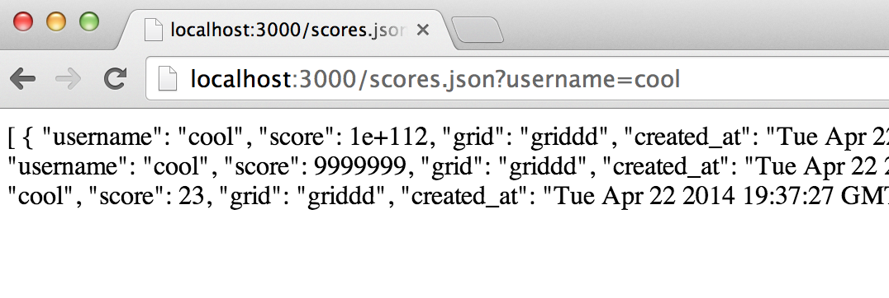
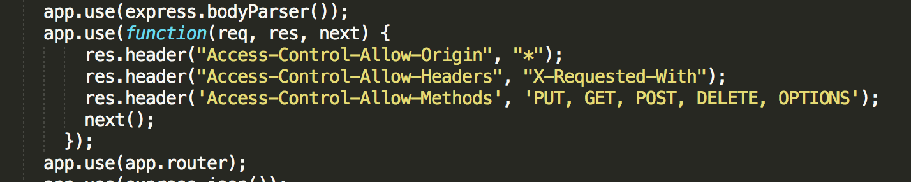

This is the security assessment for the 2048 Game Center application created by Liat Litwin. The 2048 Game Center application is a database for high scores from the popular 2048 game, which contains the user’s name, their score, and when they achieved that score. The database also contains grid information for the final grid, but the user never sees that. The client provides a modified version of the 2048 game that sends the information to their data. Anyone that plays the modified version will have their scores maintained by the 2048 Game Center database.
As of now, the application just takes in data and spits it back out. This is a huge vulnerability that can be abused by the general public once they have their hands on the modified version of the game. Users would be free to inject invalid or modified data, invalid or manipulated high scores, and even malicious script. This assessment will focus mainly on the problem with submitting and retrieving user scores from the modified version of the game.
The first test was done using the “black-box” method. Using the API submitted by the developer, you can see two methods, a POST and GET method to submit scores, and to retrieve scores from a certain user. These two API calls are vulnerable to attack by using a simple curl command to inject java script and JSON data. The way the GET call was handled also left sensitive data out in the open. The Second method was using the “white-box” method, which involved me going over the source code and trying to find vulnerabilities there. This lead me to see the code was more secure than previously thought.
The securities holes in this project all come from having an API that does not check for user input. Too much trust is being put into the input anyone can give, leaving an open and extremely easy way of attacking the site. Then there was also the gaping hole with the API for requesting scores, which would give the entire user document instead of just the scores. However, the developer did check for some form of valid input into the database, meaning any part of the request did not conform to the structure of the database, it would not be put in. This saved it from crashing and database attacks.
This affects the GET scores API.
Issue: Bad programming practice and database security issue. The GET API is suppose to retrieve the cores for that user alone. However, querying for a certain user will present the client will the full document of that user. Not only their scores, for whatever other information has been saved to the database for that user.
Severity: High. For now the security risk is not very high. But In the future it could be. As of now it just displays the user’s grid and object id. However, if passwords were added in the future, it could be a huge exploit as it would show the password to anyone who knew the person’s username.
I found the issue by just doing what the request API is suppose to do. This was an issue with the way the code was written.
Resolution: The developer used the POST to array function to add JSON data to a viewable array. Individually adding in the data on just the user, score, and date in the exact way the developer added the scores to the home page would fix the issue. This requires rewriting the code. Something along the lines of: (this is using mongoose, could be transferred over to MongoLabs)User.find({ username: request.query}, function (err, object) {
if(err) {
res.send(err);
} else if (!object){
res.send("No object exists!")
} else {
res.render('MyExpressPageHere', {
title: "Scores for User" + request.query,
obj: obj["score"]
})
}
});
This could fix the issue by using express and node itself, meaning only the scores will be sent to the page, which could be created by the developer, instead of sending the entire array.
This affects the POST scores API
Issue: The submit scores API does not check to see what kind of data is being submitted into the database. This allows for injection of html/javascript and invalid data into the developers database. This allows people to falsify scores, or post other things to the database that will ruin the experience for other users (Like injection loldogs.com into the database and having the song come up every time someone wants to check scores.).
Location: /submit.json
Severity: High. Someone could easily take control of the high score page by just continually injecting html data into the scoreboard, effectively making the website something completely different. This could lead to malicious attacks on other users, as well as invalidating all data. Once user’s see that someone could easily cheat the high score system or make the website unusable, they might move on to other options.
This attack could easily be replicated using a curl command.
You could either curl in invalid data with incredibly high scores:curl -X POST -H "Content-Type: application/json" –d '{"userame":"potato","score":"99999999999","grid":"grid"}' http://localhost:3000/submit.jsonOr with injecting other websites/html content into the page:curl -X POST -H "Content-Type: application/json" -d '{"username":"iframe src='http://www.nyan.cat/'iframe","score":"243","grid":"grid"}' http://localhost:3000/submit.json
This issue for injecting html could be resolved by either escaping all tag characters, or rejecting all data with html tags. To combat illegal scores, there could be a limit set on the range of the score. Say each score should be higher than zero but lower than the max score on 2048. This would reduce exorbitant scores but not combat fake ones completely, it’s still better than having a score show up as 1+e^111. The client could use: if (request.body.score < 0 or request.body.score is > max2048Score) {
response.send(“Invalid score submission!”);
} For injecting html or scripts, it would probably be best to reject all data containing the tag character and make it invalid for use in usernames. It could be something like this: If ( (request.body.score.indexOf(‘<’) === -1) && (request.body.username.indexOf(‘<’) === -1) && (request.body.username.indexOf(‘<’) === -1 ) {
Continue as normal;
} else {
response.send(“Stop trying to break my program!”);
} The previous could be done to match up against an array of invalid characters or strings. This method of attack the server will only work if the user inputs it to the name field, as the score field uses parseInt method, which will always return an integer or not a number.
The client enable cross origin content sharing using the ‘*’ wildcard option. This means that everyone and anyone can submit data to the database. This leads to many issues. One of the huge issues is the ability to shut down the entire server by just submitting JSON and filling up the database to its limit. As soon as the limit is filled, the server will shut down and the application will not longer work.
Location: /submit.json
Severity: High. This can easily shut down the entire server. It’s easy for an attacker to write a script that will continuously submit requests to the server. Anyone could put an ajax POST function into a loop and have it continuously submit data until the database is full. Or even easier, anyone could just keep submitting curl requests until the database is full, crashing the application.
This issue stems from the use of cross origin resource sharing within the application. The developer used this to allow for anyone who has a modified version to submit their scores. However, this opens up the application to attack from all sources as well. This would normally not be found, but going through the source code shows the use of the wildcard option when allowing cross origin sharing, which is the main problem. 
There are two possible solutions to this problem. One is to restrict cross origin resource sharing to only a few trusted sites or somehow make sure the same site doesn’t submit too many requests at once.
Normally funneling invalid data would crash server or cause the site to break. However, the developer has made sure that if any of the fields are null or undefined, then the data won’t be pushed. This means that you can’t insert extra fields, or have an invalid field name that will crash the database or the web application. For retrieving data, the same rule applies. The developer has coded it in a way that if the query is undefined data, then an empty array is displayed. This means that an attacker cannot ask for arbitrary requests from the database and overload it. Since the developer checked for nonexistent data, I was not able to do a direct attack on the database with my current knowledge. However, I was still able to inject the database with malicious code and html that would be sent back to the end user.
The sight was only slightly more secure than expected. While checking for valid JSON data and converting to strings did make a lot of forms of attack invalid, some still remained. The developer did not check the validity of the data being submitted at all, so no scores on the game could actually be trusted. Not checking the validity of the data also lead to a second problem. Anyone could submit html and JavaScript code into the “username” field of the chart, basically slowing anyone with enough time to take over the complete page. Finally, there was the huge security issue when querying for a user’s scores that would send back the entire database object to anyone requesting the scores. This means that whatever information is on there (including passwords) would be sent back in plain text to anyone requesting scores. My recommendation would be to check for valid input, this would greatly reduce the likelihood of someone injecting data into the database. Also, removing cross origin sharing and having a list of trusted developers would disable most DNS attacks. Finally, making sure the database queries only for the scores would fix the issue of having all data displayed in plain text.